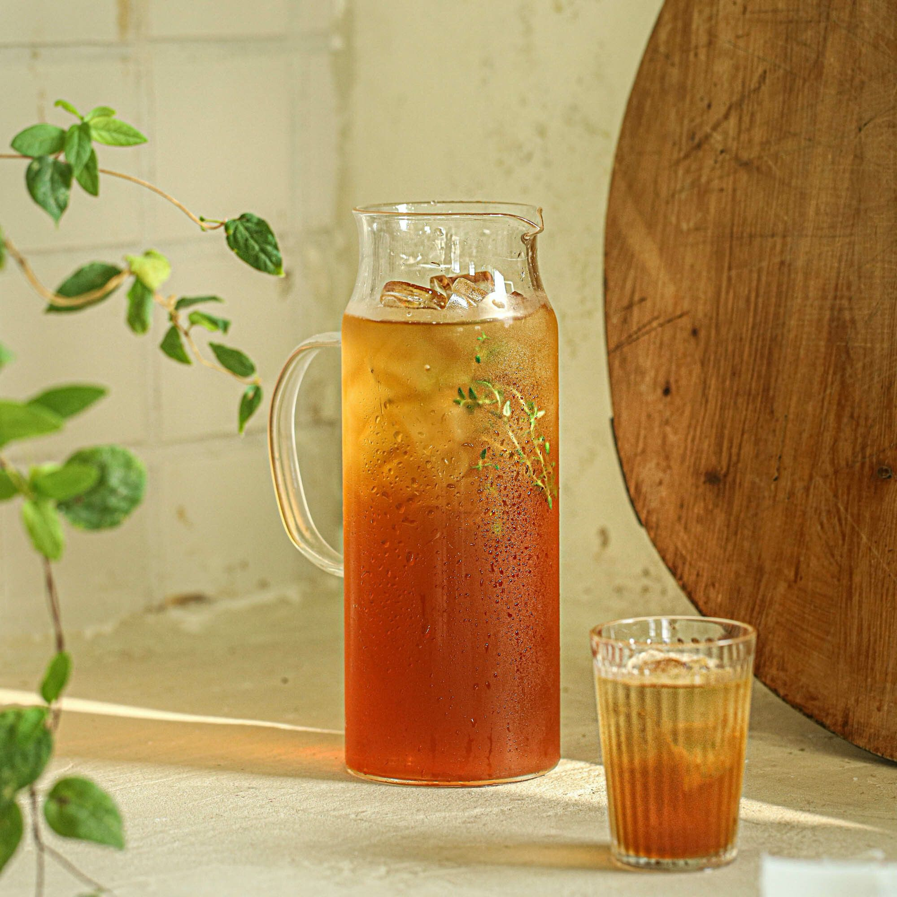

콤부차
설탕을 넣은 녹차나 홍차에 유익균을 넣어 발효시킨 음료로 해독작용과 항산화 작용, 암 예방 등의 효능을 지니고 있는 좋은 음료로 집에서 쉽게 만들 수 있어요.

기본 재료 : 3L 기준
- 물 2.8L
- 홍차 티백 8개
- 비정제 설탕 1컵
- 스코비 1개
- 콤부차 원액 2컵
조리 과정
- 1. 냄비에 물을 끓인 후 설탕을 넣어 녹여주세요.
- 2. 불을 끄고 티백을 넣어 15분간 우려주세요.
- 3. 티를 충분히 식힌 후 소독한 유리 병에 담고 스코비와 콤부차 원액을 넣어주세요.
- 4. 직사광선이 없는 서늘한 곳에서 1~2주 정도 보관해주세요.(날씨와 온도에 따라 완성되는 시기는 약간씩 차이가 있을 수 있어요. 여름 7~10일, 겨울 14일 정도)
- 5.체에 거즈를 깔고 스코비를 건져내어 콤부차 7 : 물 3의 비율로 건강하게 즐겨주세요.(딸기, 귤, 오렌지등의 과일을 갈아 1:9 (과일 : 콤부차)정도 비율로 콤부차와 섞어 병에 담아 1-2일 실온 보관하면 과일 콤부차로 드실 수 있어요.)